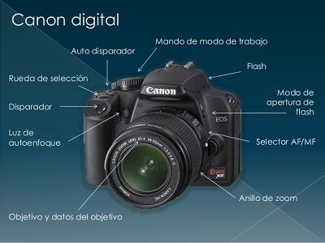

Componentes de una cámara Empezaremos por los elementos basicos de una cámara que los veremos de una manera muy concisa. 
Partes CUERPO DE NUESTRA CAMARA LENTES/OBJETIVOS SENSOR DIAFRAGMA OBTURADOR BOTONES DE AJUSTE DE PARAMETROS PANTALLA VISOR